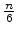
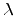

| Fast and Easy Data Compressor |
Data compression is easy if you know some theory behind, like Markov models and such. However, although the theory is kind of complex, compressing data is not so difficult if you take the direct results from the theory.
For example, compressing means ``predicting" the next character after
a set of characters given as input, based on the current history of
the document. If you predict the character correctly, you don't have
to output anything, as it follows the ``pattern" or ``rules" of the
text.
Suppose we have an input document composed of n characters, c0 to cn-1.
Suppose also that we are processing the document at character i, that is, ci.
We maintain a 2D-matrix, P with the predictions for a given pair of characters. Then, the compression is
simple: if
P(ci-2, ci-1) = ci then, don't output anything (the actual character has been predicted); if not, output the character ci literally, and update P so that the next time
P(ci-2, ci-1) = ci.
Surprisingly, this simple mechanism gives fair compression ratios. However, you have to be careful with the codification of the compressed text, because you have to be able to tell whether a character has been predicted or not.
For that purpose, the output is divided in groups, G0 to Gm, with m = . Each group Gk contains six elements (bytes) and a descriptor byte:
Thus, for the first group, g00 refers to c0 , g01 to c1 and so on. For the Gk group, gk0 refers to c6 * k, gk1 refers to c6 * k+1, and so on. The value of each gkj is as follows:
Note that  means that no character is produced, so that the actual size of the group can be less than 7 bytes (producing compression).
Note also that gkj are only valid for those k and j so that 6 * k + j < n. This means the last group can be incomplete to suit real file length.
bk is defined as follows:
Suppose also that c-1 = 0 and c-2 = 0.
The purpose of this problem is to build a compressor following this specification.
The input is formed by a series of n bytes (characters) finalized by an EOF. That is, you have to take all the input as the text to be compressed (including spaces and carriage return).
The output is the set of m = groups (G0...Gm-1) in form of ASCII characters, as described previously.
Sample explanations: In spite of the description above, consider the Sample Input below as two different files (one per non-empty line) just to illustrate the way the compressor works. Then the results at the Sample Output depends
only of the corresponding line.
The output is 23 bytes long, and the input 24 bytes long, so in this short text, the algorithm compressed 1 bytes out of 24 (4.16% compression).
a lo loco lo coloco lola football is football and basketball is basketball
@a lo lqco @ colocI lla @footba@ll is |foGand@ baskettblVibs_lA